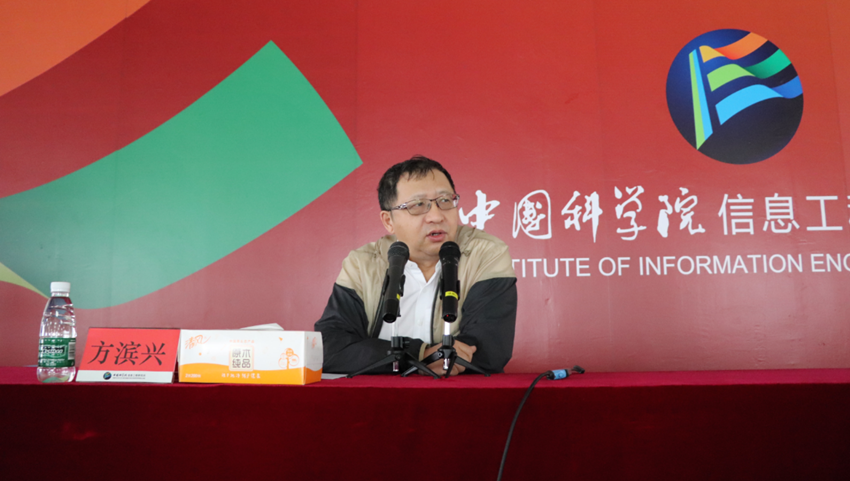
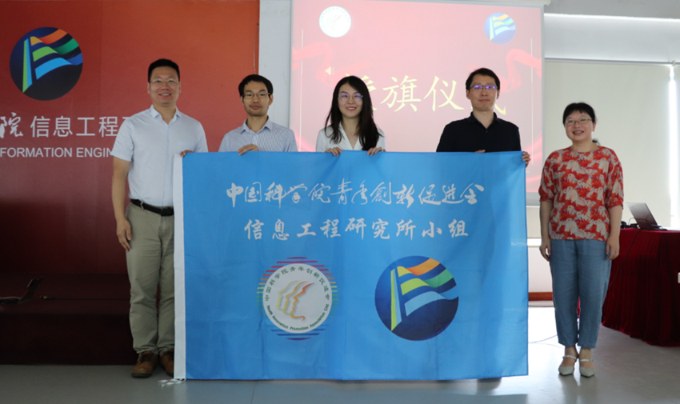

发布时间：2022年8月11日
为深入贯彻落实中科院人才工作会议精神，进一步活跃研究所学术氛围，加强研究所人才培养工作，2022年7月29日上午，中国科学院青年创新促进会（以下简称“中科院青促会”）信息工程研究所（以下简称“信工所”）小组在信工所闵庄园区4314会议室召开首届学术沙龙活动。沙龙由人力资源处处长颜廷锐主持，中国工程院院士方滨兴，中科院青促会理事长、自动化所研究员边桂彬、信工所党委副书记郭莉、信工所青促会会员以及各部门青年人才代表共百名科研骨干参加。

沙龙首先由边桂彬和郭莉致辞。边桂彬介绍了中科院青促会的整体情况和会员成长情况，他希望信工所青促会会员多参加各地方、学科分会的交流与合作。郭莉强调了国家、中科院、研究所对人才工作的重视程度，她对信工所青年人才提出三点建议和期望，一是要将自身价值实现与国家需要相结合，提高政治思想站位；二是要聚焦主责主业，强化责任担当；三是要加快原始创新，注重关键核心技术攻关。 随后，边桂彬和郭莉为青促会信工所小组正式授旗，郭莉为2022年会员颁发证书。

接着，方滨兴院士作主旨演讲，他从广州大学“方班”的实践经验出发，以“六论”（强弱是相对论，比自己，扬长补短；成败是实践论，比落地，勇闯盲区；发展是进化论，比突破，挑战自我；决策是矛盾论，比取舍，断指存腕；管理是方法论，比担当，使命驱动；文化是认识论，比格局，坚定信念）为主线，与信工所青年人才分享了自身科研心得。方院士高屋建瓴、深入浅出、系统完备的讲解引发了与会人员的广泛思考、认同和共鸣，在青促会信工所小组交流群内引发热烈讨论。